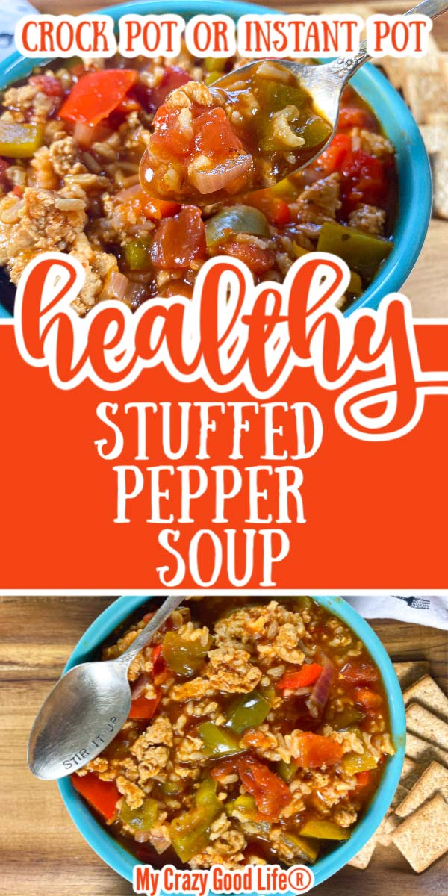

Back to Homepage
Stuffed Pepper Soup

This healthy Stuffed Pepper Soup recipe is an easy weeknight meal! Instant Pot Stuffed Pepper soup with rice is a kid-friendly dinner that you can make in the crockpot or right on the stove!
Ingredients:
- 1 lb ground turkey. You can use beef or chicken if you'd like.
- 1 medium onion, chopped. Any type will do.
- 3 medium bell peppers, chopped. I've added up to 4 peppers, and it's yummy!
- 14.5 oz can diced tomatoes include liquid.
- 15 oz can tomato sauce
- 1/2 cup dry brown rice short grain.
- 2 cups chicken broth or water
- 1 clove minced garlic
- 2 tsp oregano
- 1/4 tsp pepper
- 1/8 tsp salt
Instructions:
Pressure Cooker:
- Sauté the ground turkey until no longer pink. Drain liquid, if necessary.
- Add all of the other ingredients to the pressure cooker. Close the lid and seal your vent.
- Cook on high pressure for 8 minutes.
- Quick pressure release. If you'd like to let the pressure release naturally for a few minutes, it'll be fine sitting there.
Crockpot:
- Brown the ground turkey in a skillet over medium heat.
- Add the ground turkey, broth, tomatoes, tomato sauce, chopped peppers and onion, black pepper, garlic, oregano, and salt to the Crock Pot.
- Cover and cook on low for 6-8 hours.
- Add your uncooked rice about 1 hour before cook time is finished. You can also cook rice separately and add it right before serving.